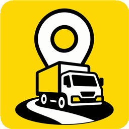
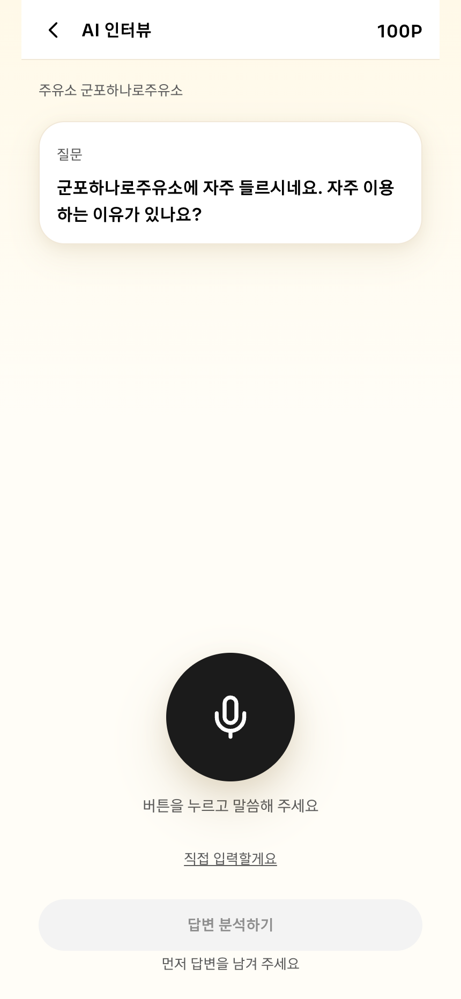
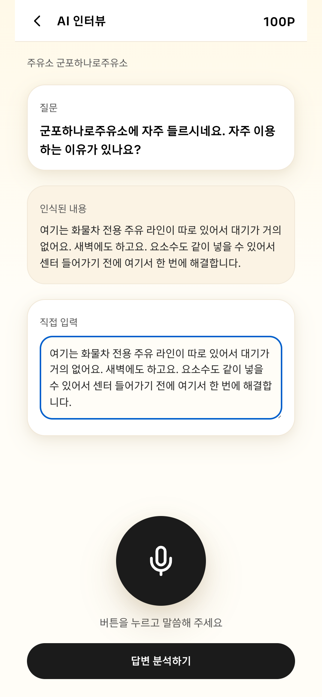
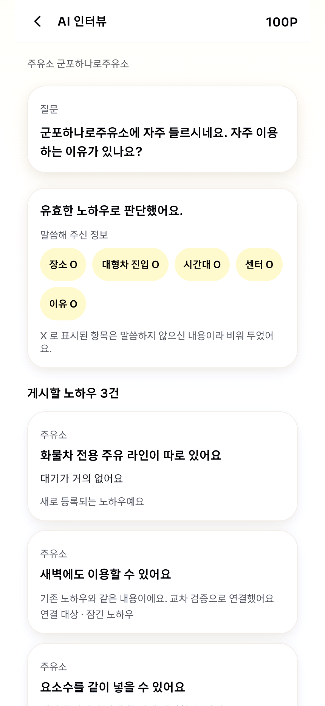
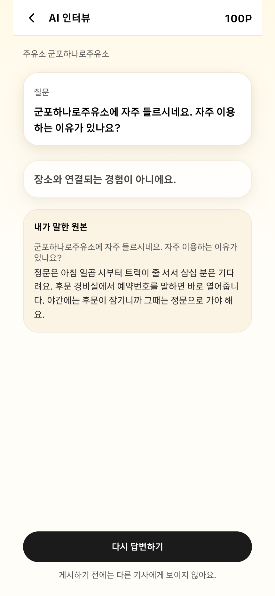
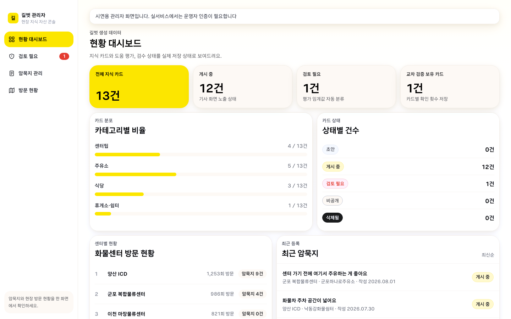

MOVE-AI Challenge 해커톤 — 길벗(Gilbeot)
문제 진단
어디로 들어가고, 어디서 기다리고, 어디서 쉬어야 하는지 같은 "도착한 다음"의 지식은 화물기사 개인의 경험으로만 남습니다. 길벗은 이 암묵지를 음성 인터뷰로 모으고 STT 결과를 LLM으로 구조화합니다. 다만 확인 가능한 것만 추출해야 합니다. 그럴듯하게 지어내는 순간 이 데이터는 쓸 수 없게 됩니다.
길벗 — 화물기사 현장 지식 공유 서비스 (gilbeot-six.vercel.app)
접근
판단 API /api/structure(Gemini)가
다섯 단계를 순서대로 통과합니다. 한 번에 모두 맡기지 않았습니다.
답변에서 확인 가능한 요소만 뽑습니다.
노하우로 게시할 만큼 정보가 충분한지 판정합니다.
부족한 요소는 추가 질문으로 되묻습니다.
기존 노하우와 같은 내용인지 비교합니다.
새 지식은 등록하고, 같은 지식은 교차 검증으로 연결하고, 다른 지식은 충돌로 처리합니다.

① 운행 맥락 기반 질문

② 음성/텍스트 답변

③ 유효 판정 + 요소 O/X + 카드 3건 분리 (교차 검증 연결 포함)
가드레일
"차 세우기 괜찮아요"라는 발화를 "11톤 트럭 주차 가능"처럼 말하지 않은 수준까지 구체화해 버립니다.
말하지 않은 항목은 채우지 않고 비워 둡니다. 구체화는 사용자가 말한 범위 안에서만 일어납니다.

잘못된 입력은 거른다 — 장소와 무관한 답변을 판정·거절
맞는 입력은 구조화한다 — 유효 판정 후 노하우 카드로 분리
품질 회귀
골든 테스트 12케이스와 회귀 러너를 만들었습니다. 프롬프트를 수정할 때마다 러너를 돌려 기존 판정이 회귀하지 않는지 확인한 뒤에만 반영했습니다.
운영 판단
LLM 호출이 실패해도 타임아웃 전에 폴백을 반환합니다.
응답 지연의 원인이던 thinking 시간을 조정했습니다.
실패 상황별 폴백 캐시를 두어 사용자 흐름이 끊기지 않게 했습니다.

관리자 대시보드 — 지식 카드·검수 상태·교차 검증 보유 카드를 실제 저장 상태로 대조
결과지표
해커톤 예선
상위 6팀 결선 진출
골든 테스트
12케이스
AI 판단
5단계
폴백 캐시
3종
회고
이 프로젝트에서 AI 파트의 일은 AI가 더 많이 말하게 하는 것이 아니라, 확인 가능한 것만 말하게 하는 것이었습니다. 근거가 없으면 비워 두는 원칙을 판정 단계·회귀 테스트·운영 설계로 뒷받침했습니다.
배포: gilbeot-six.vercel.app · 레포: github.com/Crew-97/gilbeot